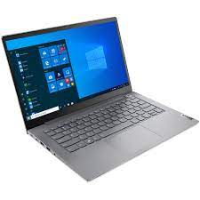

Home
About
My Portfolio

Personal Profile
Recent Computer Science graduate with hands-on experience. Took part in 6-month-long Agile development process project, working with: JavaScript, HTML5, CSS3, Ajax, Rest, XML, Angular 2+ and jQuery. Completed “The Complete JavaScript Course 2019: Build Real Projects” course from Udemy. PMP Agile Certified Practitioner.Full-stack software engineer with 5+ years of experience developing end-to-end software solutions. Worked as head engineer at Tech Company X, leading a team of developers working on a new software solution in the Fin-Tech industry. Expert in Node.Js, React, and Java.
Skills
Having the ability to learn quickly and the motivation to keep current and ahead of the game is one of my goals
when it comes to my technical skills. My strengths include audit software, Microsoft Excel and Word, as well as
experience with CAAT/ACL data mining software, Pro, and most other accounting packages. I have the software
expertise required for this position, and I am willing to quickly learn new software when required. The programs I
have expertise in include: fx Engagement, ProSystem fx Fixed Assets, ProSystem fx Trial Balance, ProSystem
fx Knowledge Coach, CaseWare Working Papers, CaseView, Fixed Assets CS, BNA Interactive Forms,
1040Scan, GoFileRoom, FirmFlow, OMNI, SAP R/3, SPSS, NUD*IST, IntelliForms, QuickBooks, HTML, Adobe
Acrobat, Lotus Notes, and Microsoft Word, Excel, Access, PowerPoint, Outlook, and SharePoint.
I have strong organizational skills, including the ability to multi-task and prioritize my workload, I am detail-
oriented, and I am driven to achieve results. I can think analytically, creatively, and independently. In addition to
my success handling financial and tax reporting in a fast-paced environment, I have acted as a mentor and
trainer, and I am focused on leadership development and self-improvement.
